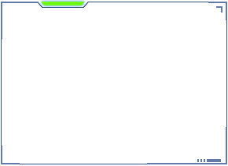

<!--<div class="dav-screen-item">-->
  <!---->
<!--</div>-->

<nz-card
  *ngIf="type === 'add'"
  class="dav-screen-item dav-screen-item-add"
  nzHoverable
  [nzCover]="add">
</nz-card>
<ng-template #add>
  
  <div class="dsi-content">
    <div class="dsi-content-inner">
      <p><i style="font-size: 24px;" class="anticon anticon-plus"></i></p>
      <p>新建可视化</p>
    </div>
  </div>
</ng-template>

<nz-card
  *ngIf="type === 'publish'"
  class="dav-screen-item dav-screen-item-publish"
  nzHoverable
  [nzCover]="publish">
</nz-card>
<ng-template #publish>
  
  <div class="dsi-content">
    <div class="dsi-content-inner">
      <p><i style="font-size: 24px;" class="anticon anticon-plus"></i></p>
      <p>oooppp</p>
    </div>
  </div>
</ng-template>

<!--<ng-template #coverTemplate *ngIf="type === 'fabu'">-->
  <!--&lt;!&ndash;<div class="dsi-bg-1"></div>&ndash;&gt;-->
  <!---->

  <!--<div class="dsi-content">-->
    <!--<div class="dsi-content-inner">-->
      <!--<p><i style="font-size: 24px;" class="anticon anticon-plus"></i></p>-->
      <!--<p>新建可视化</p>-->
    <!--</div>-->
  <!--</div>-->
<!--</ng-template>-->

